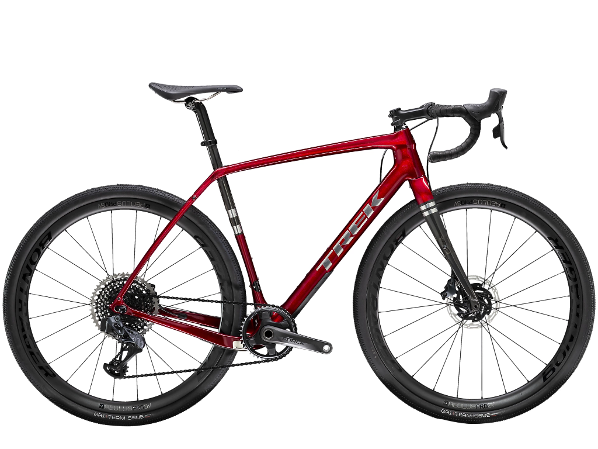
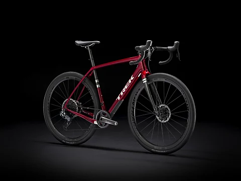
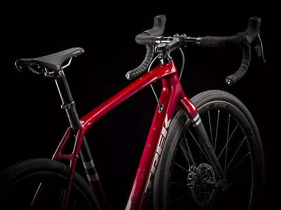
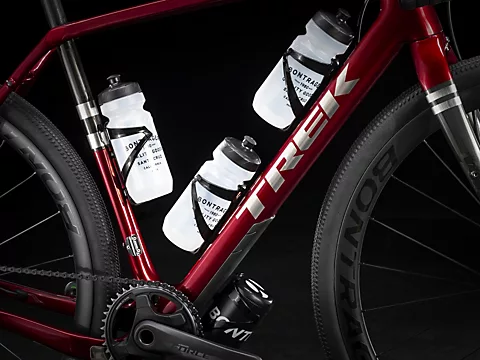
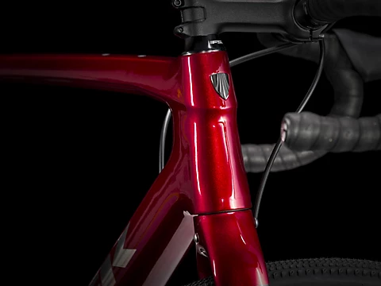
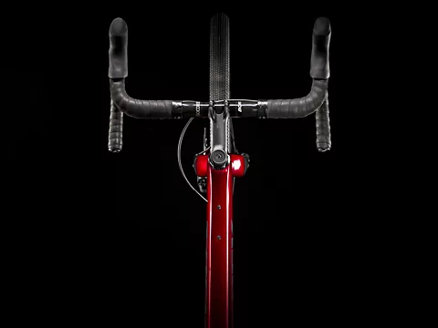
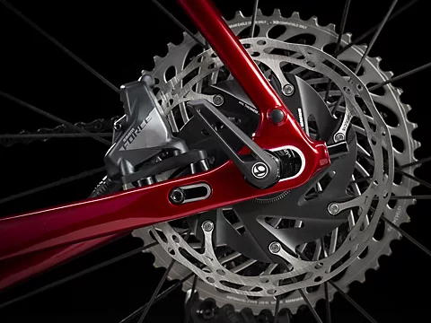

Trek Domane SL 7
Cena: 17 999,99zł
Strona Główna
Strona Główna
Trek Domane SL 6
Trek Checkpoint SL 7
Trek Madone SL 6 Disc
Trek Madone SLR 9 Disc eTap

Dane techniczne
Napęd
Manetka
Shimano Ultegra R8020, 11-biegowa
Przerzutka tylna
SRAM XX1 Eagle AXS
Korba
Shimano Ultegra R8000, 50/34 (kompaktowa), 165 mm długości
Łańcuch
SRAM XX1 Eagle, 12 speed
 
 
 